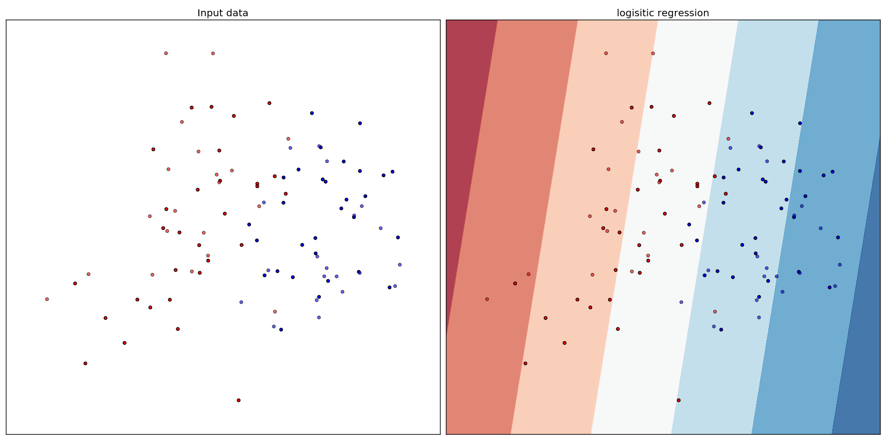
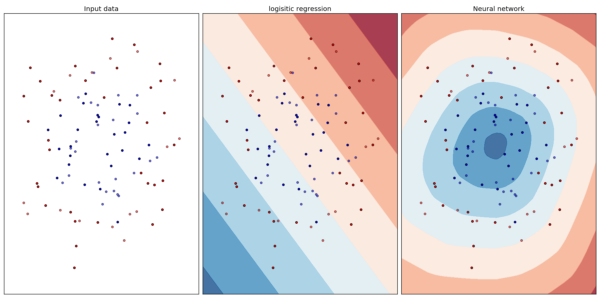
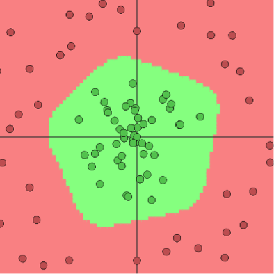

Why are activation functions needed in neural networks ?
Posted on December 25, 2016
neural networks, activation functions
Data science has become a pretty popular field these days.
And the one approach that is especially gaining popularity is Deep learning.
Though I won’t be covering the details of how neural networks work
(at least not in this post), I wanted to talk about one important component of
neural networks which a lot of people seem to misinterpret –
the activation function.
First, let’s understand what activation functions are.
Activation functions help define the output of a node given a set of inputs.
These outputs combined together help decide the class
(if we are talking about a classification problem) or the value
(if we are talking about a regression problem)

The real purpose of activation functions comes into play when we want to map
the input space to a different space. We would want to do this when the data
is not separable in the current representation.
Let’s understand this with the example of a binary classification problem

The data distribution is as shown in the above figure.
We apply logistic regression to classify the points.
The decision boundary does a fair job of grouping the points into their
corresponding classes.
But this one was easy. Let’s try a more difficult problem.

The input data is distributed as shown in the left most plot.
When we apply logistic regression now, it still gives a linear decision
boundary. But clearly this won’t work. A neural network on the other hand is
able to capture a better decision boundary as shown.

The figure shown above has been borrowed from Andrej Karpathy’s
ConvnetJS demo
. Internally, the activation function helps learn a representation similar
to the one shown above which makes the problem more or less linearly
separable.
In summary – Activation functions help take non-linear
combinations of the inputs to generate non linear
decision boundaries to be able to give better
classification results.